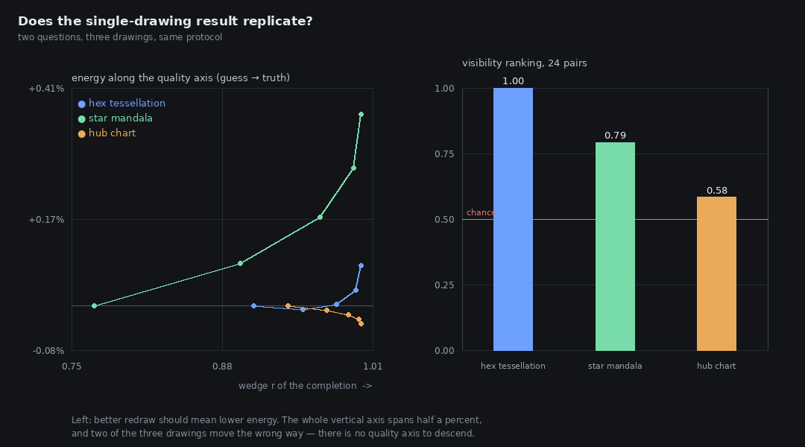
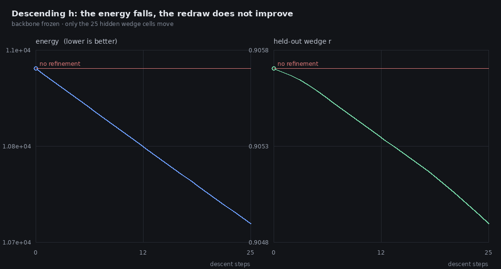
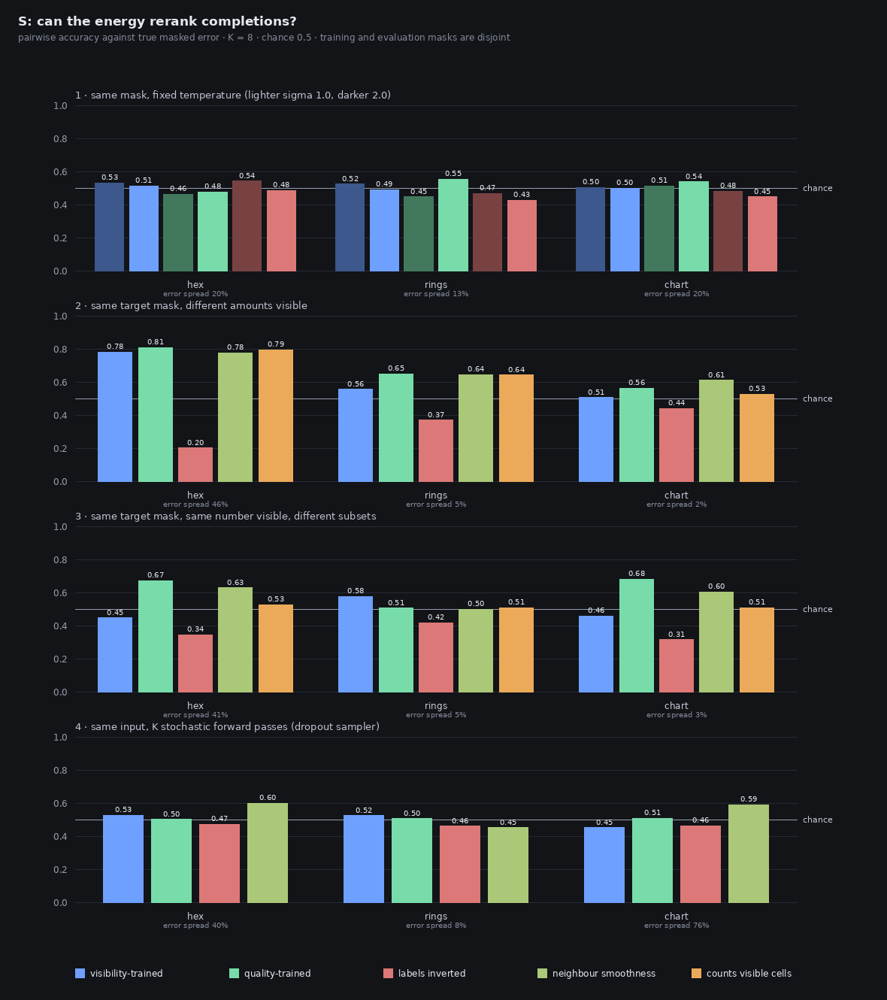

Can an energy head turn the completion into a search?
The first write-up ended with a question: instead of one forward pass, could the
model search for a better redraw by minimising a learned scalar over its own
hidden states? Freeze the 405k-parameter backbone, fit a small
E(h) on top, descend it on the hidden cells. The head costs
6,946 parameters and a minute per drawing. Run on all three drawings in the repo —
203, 61 and 25 nodes — descent improves the redraw on none of them. Its last surviving
job was to rerank: given eight completions, pick the one closest to the truth.
That is measured on the same three drawings further down, with disjoint training and
held-out masks, and it is at chance on all three in the only regime a reranker actually
meets.
6,946head parameters
3drawings tested
0 / 3descent gains
±0.4%E(true) vs E(guess)
0.50held-out reranking
64 sper drawing
The plan
Option A from the notes: keep the trained GNN frozen, learn a scalar
energy on the states it produces, then treat completion as minimisation.
E(h) = Σ_i φ(h_i) + Σ_(i,j) ψ(h_i, h_j, e_ij)
φ : 64 → 64 → 1 per node
ψ : 64 + 64 + 21 → 32 → 1 per directed edge, geometry included
6,946 parameters (2,113 without ψ)
The head is trained on pairs of states from the frozen backbone: one where most of the
drawing was visible, one where most of it was hidden.
loss = relu(E_seen − E_hidden + 2), 400 AdamW steps, no
backbone in the loop. Every training state keeps the held-out wedge hidden, so the
wedge test cannot leak the answer. Descent then moves only the hidden states (25
nodes on the hex drawing, 8 on the mandala, 3 on the chart), anchored to where the
forward pass left them, with the step size and anchor tuned on the validation mask —
never on the wedge.
Three questions decide whether this can work at all: does
E prefer the true patches to the model's guess? does it order
completions by quality? does descending it improve the redraw? All three are
measurable, and all three are below.
Every test, on every drawing
Same protocol on each checkpoint. Cells: hidden cells in the wedge.
Baseline: no refinement, one forward pass.
Test
Hex · 203 nodes · 25 cells
Mandala · 61 · 8
Chart · 25 · 3
baseline wedge r
0.9057
0.7663
0.9357
E(true) − E(guess)
+0.08%
+0.36%
−0.03%
descend h, 25 steps
0.9049
0.7622
0.9354
best of 8, Δr
−0.0007 ± 0.0009
−0.0003 ± 0.0036
+0.0002 ± 0.0005
descend completion, r at lr 0.005 → 0.15
0.832 → 0.156
0.697 → 0.015
0.789 → 0.132
visibility ranking, 24 pairs
24 / 24
19 / 24
14 / 24
per-node E vs error, hidden / val
−0.52 / +0.26
−0.66 / +0.22
+0.75 / +0.99
The descent rows are the point: on the 203-node drawing, the 61-node mandala and the
25-node chart, moving the state downhill never buys a better redraw, best-of-eight never
beats the baseline outside its error bar, and letting the patches themselves move
destroys the drawing while the score improves. The last two rows are the ones that do
not generalise — see below.
Does it replicate?
The same scripts, the same masks, three different drawings and graphs. This
is why all three were worth running.

Left: as the completion improves from the guess (r 0.77–0.94) to the true patches
(r 1.00), each drawing's energy stays within 0.4% of where it started, and the sign
differs between drawings. There is no quality axis to descend on any of them.
Right: the visibility ranking does not replicate — 24/24 on hex, 19/24 on the
mandala, 14/24 on the chart against 12/24 for chance. So the "visibility scorer" label
belongs to the big graph, not to the method.
Two claims survive all three drawings, because they are what the descent experiments
measure: the energy is flat along the quality axis, and descending it does not improve
the redraw. Three do not survive: the pairwise visibility ranking, the per-node
correlation and the direction of the tiny truth–guess gap. On the chart, the wedge is
three cells and the validation mask four, so its per-node correlations are anecdote,
not measurement; on the mandala the wedge is eight cells. The honest reading is that
this head is a weak, drawing-dependent signal — enough to be exploited by descent,
not enough to steer it.
Descending h: safe, because it barely moves

25 steps on the hex drawing's hidden states, lr 0.01, anchor 0.1 tuned on
val_mask. The energy drops 1.7%; the redraw loses 0.0008 r.
The node-only head lands in the same place (0.9055), at 18 ms per step instead of 30.
The same run on the mandala costs 0.0041 r and on the chart 0.0004; nothing is broken,
it is inert, because the frozen backbone maps a large region of state space to almost
the same picture.
Left to right: the drawing with the wedge hidden, the ordinary forward pass, and
h-descent. The wedge is the soft patch; it is unchanged, which is what Δr = −0.0008
looks like.
Descending the completion: the exploit
The other formulation writes the guessed patches into the drawing, marks
them visible, and moves them downhill through the frozen backbone. This one can
change the picture.
Ten steps, three step sizes, on the hex drawing. E falls at every step — 9,933 →
9,840 at lr 0.005, 9,933 → 9,178 at lr 0.15 — while wedge r goes 0.906 → 0.832 → 0.156
and MSE goes 0.0024 → 0.0046 → 0.96. It is the same on the other two: r collapses to
0.015 on the mandala and 0.132 on the chart while E falls. The head was trained to rank
states, not to be optimised; descent walks straight into whatever corner it has, and
the corner is a drawing no hand would make.
What the head learned, and where that holds
On the 203-node drawing it measures visibility. On the two smaller graphs
it does not even do that reliably.
On the hex drawing, energy rises monotonically with the number of hidden cells —
exactly what the paired loss asked for — while correlation on the hidden cells stays in
a 0.91–0.98 band over the same five masks. The pairwise test agrees (24/24): given two
states of this drawing, it ranks the one that saw more.
On the other two it does not hold: 19/24 on the mandala and 14/24 on the chart, against
12/24 for chance. The head is fitted to a fixed bank of 20 states, so this is a fact
about this training, not about energy heads in general — and it is exactly the
kind of claim that one drawing would have made look universal.
real, on one drawing
A visibility scorer
On the hex graph it says how much of a drawing a state had to invent: 24/24 pairs and
a monotone mask sweep. On the mandala it drops to 19/24 and on the chart to 14/24, so
the signal is real but not a property of the method.
missing
No quality axis
On hex the truth scores 0.08% worse than the guess and the blend rises; on the
mandala 0.36% worse. Only the chart goes the right way, by 0.03%. Per-node energy
anti-correlates with error on hex (−0.52) and the mandala (−0.66), not on the chart
(+0.75, on three cells). There is no shared direction in which "better redraw" is
downhill.
consequence
Descent finds the exploit
h-descent is harmless only because the frozen backbone cannot move the picture
much. Let the patches move and the same gradient destroys the drawing while the
score improves. A landscape that is not a quality landscape cannot be optimised
for quality.
The selector, measured
Given eight completions, pick the one closest to the truth. Four candidate
regimes, on all three drawings, with 60 training masks and 40 held-out masks per drawing
— none of them in the bank the head was trained on.
K = 8 candidates per mask, 0.15–0.35 of the cells visible, labels are the masked MSE of
the decoded patches, so they never enter the head's input. Three heads are scored
on identical candidates: the published visibility head, a head trained with a pairwise
hinge on the true ordering, and the same head trained on the inverted ordering. The
inverted head is the learnability control — wherever there is a signal to learn, it has
to fall below chance. Two controls with no training at all are scored alongside: pick the
candidate that saw the most cells, and a one-line neighbour-smoothness prior.
Candidate family
What differs between candidates
Held-out pairwise · hex / mandala / chart
Error spread
same mask, fixed temperature, σ 1.0
noise realisation only
0.463 / 0.447 / 0.514
20 / 13 / 20%
same mask, fixed temperature, σ 2.0
noise realisation only
0.475 / 0.553 / 0.539
37 / 28 / 48%
same input, 8 dropout samples
the model's own noise
0.500 / 0.505 / 0.507
40 / 8 / 76%
same mask, same number of visible cells
which cells were seen
0.671 / 0.506 / 0.681
41 / 5 / 3%
same mask, different amounts visible
how many cells were seen
0.807 / 0.649 / 0.562
46 / 5 / 2%
neighbour smoothness (no learning)
—
0.628 / 0.499 / 0.603
—
count of visible cells (no learning)
—
0.794 / 0.642 / 0.525
—
inverted labels, sampler family
—
0.473 / 0.461 / 0.462
—
Chance is 0.500; each cell is 41 held-out masks (40 plus the wedge) × 28 within-mask
pairs, and the quoted intervals are over masks. The quality head
unless marked otherwise. Error spread is the min-to-max error range of the eight
candidates on a typical mask — the room a perfect reranker has.
the case that matters
At chance on the real sampler
Eight stochastic passes of the same masked drawing: 0.500, 0.505, 0.507, against
0.598–0.613 on its own training masks. Pooled, 0.504 ± 0.014 over 123 mask-cells. The
no-learning smoothness prior beats it on hex (0.598, ahead by 0.10, paired t = 2.7) and
on the chart (0.590, ahead by 0.08, t = 2.2), and captures 27% of the available gain on
hex against the head's none. On the mandala the candidates differ by 8% in error, so there is nothing to
rerank.
where it does work
It counts visible cells
When candidates differ in how much they saw, it reaches 0.807 on hex against the
count's 0.794 (+0.014 ± 0.005, t = 2.9), 0.649 against 0.642 on the mandala, 0.562
against 0.525 on the chart. That is the published visibility signal, and it is
information the caller already has.
real, but not a reranker
Which subset was seen
When every candidate sees the same number of cells but a different random
subset, the head orders quality at 0.671 on hex and 0.681 on the chart, and its top pick
is 5.6% better than an average candidate on hex — 37% of the available gain. The
inverted-label head falls to 0.345 on the same pairs, so this is learned, not an
artefact. It is also not a situation a search loop is in.

One panel per candidate regime, top to bottom: fixed temperature (lighter bar σ 1.0,
darker σ 2.0), different amounts visible, same number visible with different subsets,
and the dropout sampler. Bars are held-out pairwise accuracy for the visibility-trained
head (blue), the quality-trained head (green), the inverted-label control (red), the
no-learning smoothness prior (olive) and, where the question is defined, the count of
visible cells (orange). The line is chance at 0.5; the small print under each drawing is
that family's candidate error spread — the room a perfect reranker would have. In the
bottom panel, the case a reranker actually faces, all three trained heads sit on the
line while the smoothness prior climbs above it on two drawings.
So the energy branch closes as both a loss and a reranker, for the same reason stated two
ways: the signal the head learns is how much of the drawing a state saw, and at a
fixed input it memorises the training masks instead. Nothing here says an energy head
cannot rank quality in general — it says this one, trained on 60 masks per drawing, does
not, on the one regime where reranking would be used.
What this closes — and what it does not
What is closed is narrow, and now measured four times: on a 203-node drawing, a 61-node
mandala and a 25-node chart, descending this energy never improves the redraw, and used as
a reranker on eight samples of one input it is at chance (0.500 / 0.505 / 0.507). To make
that specific loop work you would need quality labels — pairs of completions of the
same mask, ordered by their true error — a sampler that stays on the manifold of
drawings the backbone can produce, or a backbone fine-tuned through the energy instead of
frozen behind it. Those are different experiments, and all of them would still have to
beat a baseline that one forward pass reaches in 0.25 s.
That is a result about test-time search and reranking, and it is why it was published:
it removes one expensive assumption before the next layer is built on it. It is not a result about the
direction this project is on. That direction is already measured in the repo: three
drawings, eight rotations each, one graph per drawing, and a label that is recoverable
only from how the patches are arranged. Train on 0°/90°/180°/270° and test on the four
unseen angles, and the classification head scores 1.00 — the encoder is reading topology,
not memorising pixels (runs/classify). The same pooled state is
what an answer head would sit on; the energy experiment says nothing about it.
What the head contributes is not a landscape. On the big graph it is a visibility signal;
on the small ones it is weak. As a selector it is worth nothing where a selector
would be used, and it matches a count of visible cells where the candidates differ in how
much they saw. The one thing it does that a count cannot — rank which fixed-size subset of
an observation was more informative — is measured at 0.671 on the 203-node drawing and
0.681 on the 25-node chart, and is not a question a search loop asks.
Reproduce it
The backbones are the three checkpoints in runs/ — the hex
drawing the demo serves, plus the mandala and the hub chart. Only the head is trained;
the compare step merges the three runs.
for ck in main-hex main-rings main-chart; do
.venv/bin/python tools/energy_experiment.py \
--ckpt runs/$ck --out runs/energy-${ck#main-}
done
.venv/bin/python tools/energy_compare.py
# S: the reranker. 60 train / 40 held-out masks per drawing, K = 8
.venv/bin/python tools/energy_selector.py --steps 800 --out runs/energy-selector
~40–70 s per drawing on one thread of the phone CPU for the energy run, then a second
for the comparison; the selector is twelve head trainings over 100 masks and takes
about 25 minutes. Outputs: one results.json per drawing
(every number quoted above), summary.json, the heads, the
figures, and runs/energy-selector/results.json with every
per-mask accuracy. The code is mandalanet/energy.py — head,
state bank, training, both descent loops — plus three scripts that run, compare and
rerank.
Three drawings, three checkpoints, one seed each for the head's training bank. The
graphs differ in size — 203, 61 and 25 nodes — so the wedges are 25, 8 and 3 cells and
the validation masks 36, 11 and 4. Differences below ~0.001 r are noise on the hex
drawing and larger on the others; that is why every sampling result carries a standard
deviation over eight seeds and why the chart's per-node correlations are printed but not
leaned on. The head sees only states the frozen backbone produces, so this tests "energy
over a frozen model's states", not energy-based training in general. The selector's chance
intervals are ±0.02–0.03 on 41 masks, so a pairwise number within about 0.05 of 0.500 is
not a gain; the quoted t-statistics are paired over masks, which is tighter than the cell
uncertainty suggests.